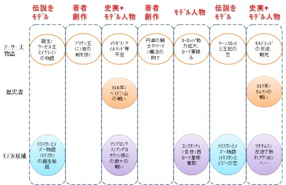

| 6人のアーサー王を追え！ (ウェールズ歴史研究会) | |
| たなかあきら | |
| UNKNOWN (2015) | |
6 人のアーサー王を追え！！
● はじめに
ブリタニア（イギリス ）※ の歴史上、最も有名で英雄的な騎士の一人がアーサー王です 。1 人の無名の少年が急にブリタニア王になり、ヨーロッパ諸国へも領土を広げるサクセス・ストーリーとして広く知られています。私も小さい頃はアーサー少年が岩から剣を引き抜くシーンをアニメなどで見てかっこいいなあと思った覚えがあります。
アーサー王物語の中で最もよく読まれているトマス・マロリー著の「アーサー王の死」には、アーサー王のさまざまなシーンが出てきます。私はそれらが歴史的にはどの様な出来事をもとに描かれているのだろうか？と興味を持ち調べていました。
（私が述べるアーサー王物語とは、「アーサー王の死」を中心とした中世以降に書かれたアーサー王に関する物語のことを意味します。）
しかし調べていくと、歴史書や史実などにはアーサー王については殆ど書かれていませんし、アーサーという名前すら明確に記述されておらず信憑性も疑わしいということが分かってきました。
つまり世界的な英雄であるアーサー王は、実在した人物なのか？歴史上どんな事を行った人物なのか？物語は事実なのか？分かっていないのです。アーサー王物語に描かれているほどの大物が歴史書にもはっきり書かれていないということは大きな謎です。
私は、アーサー王が生きたと考えられる時代に起こった出来事を考えますと、アーサー王と呼ばれていたかは別にして、アーサー王自体は実在したのではないかと思います。
私は上述した大きな謎を考えていた時にあるアイディアが浮かびました。
「アーサー王は一人ではなく、幾人かの人物を合体させた架空人物ではないか？」
そして私はアーサー王のモデルになったのではないか？と考えられる幾人かの人物を探しました。アーサー王の人生を分解し、それらとモデル人物の人生との共通点を見つけてアーサー王の新たな真相に迫ってみよう！！と思い立ちました。
私が書いていくこれからの内容によって、、アーサー王にはそんな背景があったのか！アーサー王はそんな人物だったと考えられるのか！そんな視点でアーサー王物語を読むととても面白いなあ！など、アーサー王物語を読むだけでは得られない視点で楽しんでいただき、よりアーサー王の面白さを味わっていただければありがたいと思います。
※ 現在のイギリス（イングランド、ウェールズ、スコットランドの一部）はブリタニアと呼ばれていました。ここではブリタニアと記述します。
● 目次
１ アーサー王物語について
１－１ アーサー王物語のあらすじ
１－２ アーサー王物語の起源
１－３ アーサー王の時代背景
１－４ アーサー王の先祖について
２ アーサー王のモデル候補者について
２－１ アーサー王のモデル候補者その１
２－２ アーサー王のモデル候補者その２
２－３ アーサー王のモデル候補者その３
２－４ アーサー王のモデル候補者その４
２－５ アーサー王のモデル候補者その５
３ アーサー王のモデル候補者の纏め
４ おわりに
１ アーサー王物語について
● １－１ アーサー王物語のあらすじ
ここで「アーサー王物語」のストーリーについて、簡単に概略を説明します。
１－１－１ アーサー王の誕生と即位
ブリタニア王であったアーサーの父ウーゼル・ペンドラゴンは、部下のティンタジェル公ゴルロイスの美しい妻イグレーヌに横恋慕します。ウーゼル王の軍隊はティンタジェル公をおびき出して殺害し、ウーゼル王はマーリンの魔法でティンタジェル公に化け、イグレーヌが居るティンタジェル城に忍び込み、イグレーヌと一夜を共にします。イグレーヌは子を宿し、その後アーサーが産まれます。マーリンとの約束通りにアーサーは身分を隠されたまま家来のエクトル卿の子として育てられます。ウーゼル王の死後、王の後継が決まらないまま国が混乱しますが、大聖堂前に岩上に突き刺さった剣が現れアーサーだけが抜くことができブリタニア王と認められ即位します。
１－１－２ ブリタニアの平定
アーサー王が即位した当時は、ブリタニア北部（イングランド北部）や南西部（ウェールズ）の大部分はアーサー王の敵でした。アーサー王は円卓の騎士達や魔法使いマーリンと共にブリタニア全土の統一に乗り出します。ウェールズのリエンス王に攻められてたロデグランス王を助け、王の娘グィネビアを妃とします。魔法の剣エクスカリバーを手に入れ、北軍（アングロサクソン軍）やウェールズ軍との数々の戦いに勝利しイギリス全土を平定します。
１－１－３ アーサー帝国の拡大
アーサー王は更に領土を広げようと、スコットランド、アイルランドやアイスランドに戦いをしかけ征服します。更にアーサー王は大軍を率いて、スウェーデンやノルウェーの北欧諸国を占領しフランス全土まで征服します。
しかし、アーサー王の破竹の勢いを面白く思わないローマ皇帝ルーシャスは、アーサー王に貢物と服従を要求してきます。アーサー王がこれを断ると、ルーシャス皇帝はフランス奪回を狙って戦いを仕掛けてきます。アーサー王も不条理なルーシャス皇帝に抗戦し全面戦争となり、アーサー軍はローマ軍と死闘を続けます。アーサー王はルーシャス皇帝と一対一の直接対決で破り、ついにローマ帝国軍を全滅させます。
１－１－４ アーサー王の亀裂
円卓の騎士の中心的人物で、アーサー王の信頼も厚く勇敢で武勇に優れるランスロット卿がいました。しかし、ランスロットはグィネビア王妃と恋仲に陥り不倫を続けます。それが他の円卓の騎士たちにも知れるところとなり、円卓の騎士の間で亀裂が生じ始めます。アーサー王はランスロットの忠誠心を疑うことなく、お互い戦うことを望みませんでした。しかし、円卓の騎士達の分裂によってついにアーサー王はランスロットとの戦うこととなり忠誠関係は破局します。
１－１－５ アーサー王の最後
そんな中、アーサー王のヨーロッパ遠征中にイギリスを任せていた円卓の騎士の一人モルドレッドが、グィネビアを娶りアーサー王に反乱を起こします。アーサー王は急きょイギリスにもどり、モルドレッドと死力を尽くした戦闘となります。この戦いでモルドレッドは戦死し、アーサー王も致命傷を負いアヴァロンの地で息を引き取ります。
以上が簡単なアーサー王物語のあらすじです。詳しく知りたい方はトマス・マロリー著の「アーサー王の死」や、アーサー王物語が初めて書かれたジェフリー・オブ・モンマス著の「ブリタニア列王史」を読んでいただけると、より楽しんでいただけると思います。
※ 今回は聖杯探索の話やマーリンが恋に落ちた湖の姫の罠にはまって幽閉されてしまう話などについては触れません。これらは、ブリタニア列王史の後に主にフランス中世文学によってどんどんと付け加えられていった内容と考えられています。ランスロットとグィネビア王妃との不倫、アーサー王とランスロットとの戦い、破局の場面も同様に後に加えられたと考えられます。
● １－２ アーサー王物語の起源
それでは実在のアーサー王は、いつの時代の人でいつの時代から描かれているのでしょうか？実在の人物とアーサー王物語とはどんな関連があるのでしょうか？
そこで幾つかの歴史書に書かれているアーサー王について簡単に纏めてみました。
アーサーが登場する初めての記述は 、6 世紀にキリスト教司祭ギルダスが書いたとされる『ブリトン人の没落』と言われています。
ただここではアーサーという名前は出てこず、ベイドン山の戦いでサクソン人と戦ったケルト側の指揮官と記述されています。その文脈からはケルト側が勝利したと読み取れるようです。この書からはベイドン山の戦いがいつ何処で起こったのかは分からないようです。
次にアーサーが登場するの は9 世紀にネンニウスによって書かれた『ブリトン人の歴史』です。ここではベイドン山の戦い が 1 2 回目の戦いの最後の戦場となっています。ここでもアーサーは戦闘隊長として登場し、一人 で 96 0 人のサクソン敵兵を倒したと記述があります。それぞれの戦いの場所などは推測はできるようですが特定までには至っていないようです。
1 1 世紀に書かれた『カンブリア年代記』にもアーサーと考えられる記述があり、ベイドン山の戦い は 51 6～ 51 8 年とされています。アーサーは三日三晩の間十字架を両肩で担ぎ、ブリトン人が戦いに勝利した記述されています。
そし て 1 2 世紀 、 113 8 年にジェフリー・オブ・モンマスによって書かれた『ブリタニア列王史』の一部分にアーサー王（アルトゥールス）が登場し、アーサー王物語の原形が完成します。しかしブリタニア列王史は事実も含まれているとは考えられますが、歴史書ではなく作り話も多いのではないかと言われています。ジェフリーの想像力・空想力によってアーサー王の全生涯を作り上げたのではないかと言われていますが、今となってはどの部分が事実でどの部分が作り話か証明する手立てはありません。しかし、私達自身がいろいろなアーサー王を想像することによって、更にアーサー王物語を楽しむことができると思います。
● １－３ アーサー王の時代背景
ここまで読みますと、アーサー王は実在の人でなく、作り話だったの？？夢が壊されたようでがっかりだなあ、と思われるかもしれません。確かにアーサー王物語に出てくるアーサ－王は想像上の人物かもしれませんが、歴史上の記述を見る限りでは何らかのアーサーが実在していると考えられます。
歴史上のアーサー王を纏めまてみると以下のようになります。
アーサー王は恐ら く5 世紀後半 ～6 世紀半ば頃までに存在した人物と推定されます 。5～6 世紀のブリタニアはローマ帝国の直接支配が終わり、ブリタニア王もローマからの派遣ではなくブリタニア独自で選んだ人物が就任するようになっています。
（アーサー王物語ではアーサー王や父ウーゼル王がブリタニア王になっています。）
世界的な歴史の流れではゲルマン民族が西側へ大移動（侵略）する時代です。その影響下でゲルマン民族系のアングロサクソン族がブリタニア国の領土を奪おうと侵略してきます。
歴史上のアーサー王はブリタニアを守るために、アングロサクソン族と勇敢に戦った騎士と考えられます。
そのアーサー王に、ジェフリーは更に色々な話を付け加えて伝説上のアーサー王を作り上げたと考えられます。その伝説上のアーサー王を作り上げるために、ジェフリーは様々な人物をモデルにしたのではないかと私は考えています。つまり、実在のアーサー王と考えられる人物＋何人かのモデル人物＝伝説上のアーサー王ということです。さらに中世の文学において伝説部分を進化させていきました。
ここでの説明は省きますが、アーサー王物語の元となった伝説「ブリタニア列王史」、伝説を物語化した「ブリュ物語」、物語が進化した「アーサー王の死」中世以降でのアーサー王文学の進化については、「アーサー王伝説」（アンヌ・ベルトゥロ著、日本語訳）に詳しく書かれてありますので、ご一読いただければと思います。
● １－４ アーサー王の先祖について
アーサー王のモデルとなった人物はだれなのか？の本題に入る前に、アーサー王の先祖についてお話したいと思います。アーサー王の先祖をたどってみますと様々な事実が分かり（物語なので真偽は分かりませんが）、新たなアーサー王の像が浮かび上がってきてとても興味深いです。しかし中世以降に作られた物語の中にはアーサー王の先祖について書かれた書は殆どありませんので、主に「ブリタニア列王史」に基づいて書かれていると思われる様々な情報を纏めてみました。
・アーサー王の父親と叔父達
これまでにお話ししましたように、ブリタニア王のウーゼル・ペンドラゴン王です。ウーゼル王には二人兄がいて、長兄はコンスタン スⅡ 世、二番目がアンブロシウス・アウレリアヌスとされています（何れも実在の人物と言われています）。何れの兄たちもウーゼル王の前にブリタニア王になっています。
長兄コンスタン スⅡ 世はブリタニア王になりましたが、ウェールズ首長のヴォルティゲルンに殺され王の座を奪われてしまいました。身の危険を感じた母は幼いアンブロシウスとウーゼルを連れてブリタニア国を脱出し、ブリタニー国（現在のフランス・ブルターニュー地方）へ逃れました。ブリタニー国王である叔父アルドリエン王や従兄のブティッ クⅠ 世のもとで成長し、敵を討つ機会を狙います。機は熟しブリタニア国に戻ったアンブロシウスは宿敵ヴォルティゲルンを破り、ブリタニア国を取り戻しました。その後二人はアングロサクソン族のヒンギストとホルサや彼らの息子達と幾度となく戦い、アングロサクソン族の侵入を防ぎました。
・アーサー王の祖父
アーサー王の祖父は西ローマ皇帝コンスタンティ ンⅢ 世とされています。コンスタンティ ンⅢ 世も実在の人物です。当初はコンスタンティ ンⅢ 世の兄アルドリエンがブリタニア王となりましたが、ブリタニア北部での激しい戦いと寒さに嫌気がさし、ブリタニア王の座を弟のコンスタンティンに譲ってしまいました。ブリタニア王になったコンスタンティンは勢力を広げるために海を渡り、フランス・ゴール地方に拠点を置きました。勢力範囲をライン川まで伸ばし、西ローマ皇帝まで上りつめました。
・アーサー王の更なる先祖
アーサー王の祖父コンスタンティ ンⅢ 世の更に曾祖父まで辿ってみました。曾祖父か ら3 代子孫（コンスタンティンの父）まではブリタニー王で、つまり現在のフランス在住でした。祖父の曾祖父はコナン・メリアドクという人物で初代のブリタニー王になった人物です。
コナンはブリタニア国出身のブリタニア人で（現在の北ウェールズ付近に住んでいた）、アーサー王よりおよ そ 10 0 年前 の4 世紀後半にブリタニー王とコーンウォール王（アーサー王の誕生の地）を兼ねていました。
コナンがウェールズに住んでいた当時、ブリタニア王はローマ軍人のマグヌス・マキスムスでした。マグヌスはウェールズ北部に拠点を置いてブリタニアを統治していましたが、西ローマ帝国に攻め入り皇帝を倒しその座を奪いました。
マグヌスと行動を共に戦い勝利を得たコナンは、報酬としてブリタニー地方を貰い受け初代の王となり子孫達は王を歴任します（ローマ帝国の影響下）。このコナンが行ったケルト系民族であるブリタニアの人々の移住により、現在もケルト系民族の末裔がブルターニュー地方に住んでいると考えられます。
以上がアーサー王の先祖の説明になります。
アーサー王物語で描かれているアーサー王は、祖先を見ても王として素晴らしい血筋です。在ブリタニアのフランス系ローマ帝国人ですが、祖先のルーツはウェールズ北部になります。興味深いのはアーサー王の叔父アンブロシウス、祖父コンスタンティ ンⅢ 世、またマグヌス・マキシムスはアーサー王物語と類似点がみられ、アーサー王のモデル人物である可能性があります。次章で他のアーサー王のモデル候補者と供に詳しくお話していきます。
● ２ アーサー王のモデル候補者について
アーサー王のモデルとして数多くの歴史上人物が挙げられています。
主なモデル候補としては、
・ルキウス・アルトリウス・カストゥス
・マグヌス・マキシムス
・コンスタンティ ンⅢ 世
・アンブロシウス・アウレリアヌス
・リオタムス
などがおり、一人ひとり話をしていきます。
モデル候補とは別に、アーサー王の直接のモデルではありませんが、アーサー王物語のストーリーに大きな影響を与えている物語があります。「トリスタン・イズー物語」です。
トリスタン物語はアーサー王物語の中にも取り入れられており、主人公のトリスタンは円卓の騎士の一人となっています。
・トリスタン・イズー物語の舞台はアーサー王が産まれた場所と同じコーンウォールのティンタジェル城です。
・コーンウォールのマルク王の兄リヴァラン王の息子として生まれましたが、リヴァラン王は戦いで戦死し、トリスタンは王の部下に生い立ちを隠して育てられます。
・トリスタンは叔父マルク王の妃イズーと恋をし人目を避けて愛を育てていきますが、やがて人々や王に知られるようになり仲を割かれます。トリスタンは追放された先で傷を負い亡くなり、それを知ったイズーも後を追うように亡くなります。
自分の主君の妃との禁じられた恋愛と分かっていても、お互い惹かれ合い離れることができず様々な苦難に合いながらも心を通わせていきます。しかしその禁断の恋がもとで主君と決別し自らも滅んでいく点は、トリスタン＆王妃イズーの恋とマルク王との関係、ランスロット＆王妃グウィネヴィアの恋とアーサー王との関係がとても似通っています。アーサー王の父ウーゼルが部下の妻を奪った点も禁断の点では共通しているのではと思います。
禁断の恋の点だけではなく、トリスタンとアーサー王も生い立ちを知らされずに育っている部分も似ており、アーサー王物語はトリスタン・イズー物語から大いに影響を受けているのではと推測できます。
トリスタン・イズー物語はスコットランドの話がイギリスのウェールズやコーンウォール地方に伝わった伝説で、ドリスタン王 子※ とマーチ王、エシルト妃とのロマンスでした。この物語がフランスに伝 わ 1 2 世紀に纏められた叙事詩がもとになっているようです。近代で は 1 9 世紀にリヒャルト・ワーグナーによって楽劇として作曲されています。
※ スコットランド北部のピクト族に、例え ば8 世紀にドレスト王（ドレスタン）がおり何らかの関連性が考えられます。
● ２－１ アーサー王のモデル候補者その１
まず候補者の一人であるルキウス・アルトリウス・カストゥスについてお話しいたします。
ルキウス は2 世紀に活躍したローマ軍人で、ブリタニアではなく南イタリアにあるカンパニア州の出身と考えられています。 アーサー王の時代よ り2、3 世紀ほど前の人物です。
ルキウスについての情報は現クロアチアのダルマチアの海岸にある石棺に残されています。
石棺によりますと、ルキウスはローマ軍の 第3 軍団ガッリカ、 第6 軍団フェッラタ、 第5 軍団マケドニアに所属し筆頭百人隊長に昇進しました。軍人として力量があったのでしょう、その後ローマ海軍のナポリ湾艦隊長、続いて 第6 軍団ウィクトリクスの隊長と出世していきます。当時のローマ帝国は、暴君と呼ばれたコンモドゥスが皇帝の時代でした。コンモドゥスは剣闘士競技に夢中で遊びほうけて、本人は戦いに出ず国政はほったらかしの乱れた世の中でした。そんな中、ルキウスはイタリアから離れペルティナクス総督の下でブリタニアに赴任します。
ルキウスは 第6 軍団ウィクトリクスの隊長としてブリタニア北部にあるハドリアヌス防壁の警備に着き、ピクト人やスコット人の侵入を監視し防御する役割を果たします。
ハドリアヌス防壁は現在のスコットランドとイングランドの境目付近に位置し、ローマ五賢帝で有名うなハドリアヌス帝がここまではローマ帝国だ！とローマの勢力を誇示するため に2 世紀に建設された防壁です。
駐在したブリタニアでは、所属していた 第6 軍団ウィトリクス軍の兵士達が待遇改善を求めて反乱を何度も起こしました。しかしペルティナクス総督は兵士達の要求を拒絶して鎮圧を行い、ルキウスも反乱には加わらずに、ルキウスはローマ権力への忠誠姿勢を貫きます。ペルティナクスの鎮圧は実に無慈悲で容赦のないものであったと言われ、それに従ったルキウスも無慈悲な面があったのか任務に忠実にまた非情に遂行したと考えられます。
ルキウスのローマ帝国への忠誠を尽くす姿勢を、後に皇帝になったペルティナクスに評価され、ルキウスは軍総督に昇進します。アルモニカ（現在のフランスブルターニュ地方）に遠征を命じられ、アルモニカ人の反乱を制圧します。軍を退役後は現クロアチアのダルマチアの長官に任命され、アドリア海に面した美しい場所で余生をゆっくり過ごしたのではと思います。
ルキウスはアーサー王のモデルではないか？という学説 は 192 4 年にケンプ・マローンによって発表されています。映画『キングアーサー』ではルキウスをアーサー王のモデルとして用いており、舞台は寒い雪の降るスコットランド地方でサイソン（サクソン人）と戦い勝利する物語になっています。
ルキウスの生きた時代 を 30 0 年ほど後にずらし、多くの登場人物や背景をアーサー王物語に合わせこみ、ピクト人との戦いをサクソン人との戦いに変えて作りなおしています。ここでのアーサー王は アルトリウス と呼ばれローマ側の人間として描かれ、ブリタニア人の円卓の騎士たちに対して友情を育てますが、任務を遂行するように非情な面も持ちあわせ、実在のルキウスの人間像もうかがえるなあと思います。
アーサー王物語のアーサー王とルキウス・アルトリウス・カストゥスの類似点を下記に纏めました。時代は異なりますが、ルキウスはアーサー王のモデルのモデルの一人として可能性は十分にあると思います。
・アーサー王：アーサー王に敵対する他のブリタニア諸侯やアングロサクソン族と戦い平定。領土をヨーロッパまで拡大し、フランスを占領。
・ルキウス：ハドリアヌス防壁でピクト族と戦い侵入を防御。駐在のローマ軍の反乱を鎮圧。総督に任命されフランスのアルモニカに派遣され反乱を鎮圧。
● ２－２ アーサー王のモデル候補者 その２
次に、アンブロシウス・アウレリアヌスのアーサー王モデルの可能性について考えていきます。
先にお話ししましたように、アーサー王の叔父はアンブロシウスとされています。アンブロシウス は 40 0 年頃に生まれたとされ、兄のコンスタン スⅡ 世がウェールズ首長ヴォルティゲルン に 41 1 年頃に殺された時に弟ウーゼルとブリタニア国を脱出し、ブリタニー国（現在のブルターニュー地方）の叔父アルドリエン王や従兄のブティッ クⅠ 世のもとに逃れます。
ブルターニュー地方で育ったアンブロシウスは、復讐の機をうかがいブリタニアに戻ってきます。イングランド南西部コーンウォール地方のデヴォンに上陸し 、 43 7 年頃ワロップの戦い（イングランド南部のハンプシャー地方）でついに宿敵ヴォルティゲルンを破りブリタニア王の座と領土を取り戻します。その後も宿敵同士の二人は幾度となく戦い、アンブロシウスはヴォルティゲルンを追い詰め完全に叩きのめしました。
ここまでの前半のアンブロシウスと、その後の後半のアンブロシウスは同人物ではなく別人物でないか？という説があります。前半のアンブロシウスにはエルダーを付けて区別しており、前半のアンブロシウス・エルダー は 40 0 年頃 ～ 45 0 年頃、後半のアンブロシウス は 43 0 年頃 ～ 48 0 年頃に生きたとされています。（アンブロシウス・エルダーの息子がアンブロシウスではと考えられています）。
前半のアンブロシウス・エルダーは宿敵を倒しブリタニア王座を取り戻した事に対し、後半のアンブロシウスは専らアングロサクソン族の侵略との戦いに明け暮れます。
宿敵ヴォルティゲルンのとった政策によりアングロサクソン族が傭兵としてブリタニア国にやってきます。やがて彼らは移住ではなく侵略者に変貌し、ブリタニアの土地を奪っていきます。アンブロシウスはアングロサクソン部隊の長ヒンギストとホルサや彼らの息子達と幾度となく戦い、何れも勝利してアングロサクソン族の侵入を防ぎました。
アーサー王とアンブロシウスとの類似点を簡単に纏めると下記になります。
・アーサー王：ブリタニア王になり、敵対する他のブリタニア諸侯やアングロサクソン族と戦い平定。
・アンブロシウス：宿敵ヴォルティゲルンを破りブリタニア王を奪回。アングロサクソン族との戦いを続け勝利する。
つまり、アンブロシウスのアングロサクソン族との戦いが、トマス・マロリーの『アーサー王の死』の前半に出てくるイングランド平定の諸侯との戦いのモデルとなり、それらは歴史書に出てくるベイドン山の戦いを含むアングロサクソン族と の 1 2 の戦いではないかと考えられます。
ただ、幾つかの歴史書にはベイドン山の戦いと推測される言及があり、闘い は 51 6 年頃に起こったとされています。この時には後半のアンブロシウスも生きてはいないと考えられ （ 48 0 年頃に毒殺された疑い、後を継いだ弟ウーゼル王 も 49 0 年代には亡くなっているらしい）、このベイドン山の大勝利は誰の偉業だろうか？という疑問がどんどん大きくなってきます。
※ アンブロシウスの番外編：アンブロシウスと魔法使いマーリン
アーサー王のモデル候補者のアンブロシウス・アウレリウスは魔法使いマーリンとの深い関連性もあります。
一点目は、アンブロシウスが宿敵ヴォルティゲルンとの争いのさなか、ヴォルティゲルンはベッズゲラートという北ウェールズの場所に要塞を建てようとします。しかし、要塞はすぐに壊されてしまいます。魔法使いマーリンに調べさせたところ「要塞の地下で赤いドラゴンが白いドラゴンと戦い、赤いドラゴンが負けていた」と笑って答えたそうです。赤いドラゴンがウェールズを指し、白いドラゴンがアングロサクソンを指し、今後のアングロサクソンの侵略を暗示していたそうです。その元凶が宿敵ヴォルティゲルンだった訳です。
二点目は、アンブロシウスがブリタニアを取り戻した後、マーリンの魔法を使ってアイルランドから巨石を運びストーンヘンジを造り、父や兄の霊を鎮めたという伝説があり、更には
後にウーゼル王もストーンヘンジ内に葬られてたという言い伝えもあります。マーリンの魔法はアーサー王物語だけでなく色々な所で大活躍しています。
● ２－３ アーサー王のモデル候補者 その３
次のアーサー王のモデル候補者は西ローマ皇帝マグヌス・マキシムスです。
マグヌスは貧しいスペインの片田舎で340年頃に生まれたとされるローマ軍人で、アーサー王が生きたと考えられる時代より150年ほど前になります。初めは名も無い下級軍人でしたが、マグヌスは上級司令官のカウント・テオドシスに抜擢されます。カウント・テシオドスはローマ皇帝テシオドスの父で、マグヌスの遠縁に当たるとされています。マグヌスはカウント・テオドシスの片腕となり軍人としての才能を開花させます。マグヌスは多くの戦いで活躍をし、どんどん地位を上げていきます。
マグヌスのブリタニアとの深い関わりは、スコットランド地方での戦いに派遣されてからになります。367年頃にハドリアヌス城壁を守るローマ軍人がスコット軍やピクト軍と連合し、ローマ帝国に対して反乱を起こしました。この反乱を鎮めるため、マグヌスはテオドシウスと共に出征します。反乱軍は強力で二人が加わる前は劣勢を強いられていましたが、ローマ最強メンバーの二人は反乱軍を難なく鎮圧しました。
その後マグヌスはウェールズに訪れます。そしてウェールズの首長エウダフ・ヘンの娘と結婚しエウダフの後継者となり、ローマには戻らず北ウェールズのカナーヴォンという町で暮らします。マグヌスは380年にローマ帝国からブリタニア王に指名され、一軍人から指揮官を経て王までとんとん拍子に出世街道を進みました。しかし、マグヌスの勢いは止まらずまだまだ続きます。
当時西ローマ帝国はグラティアンが皇帝でしたが軍人に対する待遇が悪く、不満を持った軍人たちはマグヌスのもとに集まってきます。軍人たちに扇動されマグヌスは383年に乱を起こし西ローマ帝国に攻め入ります。グラティアンを倒しついに西ローマ皇帝にまで上り詰めました。その後マグヌスは西ローマ帝国の法律や政治を見直すなど、皇帝として優れた働きをします。マグヌスは軍事的・政治的な才能を持っていたことは言うまでもありませんが、人々の信頼と人望を得て多くの賛同者と共に成功を分かち合える力を発揮し、西ローマ皇帝にまでになれたと考えられます。
しかし、マグヌスの繁栄は長くは続きませんでした。387年にマグヌスは息子フラヴィウスを西ローマ皇帝にし、もう一人の西ローマ皇帝ヴァレンティニアンⅡ世（グラティアンの息子）を失脚させようと攻撃を始めてしまいました。ヴァレンティニアンⅡ世は東ローマ帝国の首都コンスタンチノープルに逃げ込みテオドシウス皇帝に助けを求めます。マグヌスはテオドシウスに攻め入りますが逆に捕えられ処刑されてしまい、僅か5年でローマ皇帝として幕を閉じてしまいました。
ここでマグヌス・マキシムスとアーサー王の類似点を纏めてみます。
・敵軍と戦いブリタニアを平定する点
マグヌス：ピクト軍とローマ軍人の反乱と戦い鎮圧する（その後ブリタニア王となる）
アーサー王：諸侯と戦いブリタニアを平定しアングロサクソン族と戦い数々の勝利をおさめる。
・王として優れた気質を持ち人々の信頼を得る点
マグヌス：人望ありブリタニア軍、ローマ軍がマグヌスの元に集まる。
アーサー王：気品があり、有能な騎士達が集まり円卓の騎士軍を作る。
・軍を引き連れフランスに上陸しローマを支配する点
マグヌス：西ローマ帝国に攻め入り皇帝グラティアンを倒し、西ローマ皇帝となる。
アーサー王：ローマ帝国軍を全滅させ、皇帝ルーシャスを殺す。
・反乱を起こし（起こされ）戦死する点
マグヌス：マグヌスは反乱を起こし、東ローマ皇帝テオドシスに敗れ処刑される。
アーサー王：モルドレッドが反乱を起こし、共に戦死する。
時代は異なるとはいえ、マグヌスとアーサー王はとても類似点が多い事がわかります。マグヌスは有力なアーサー王のモデル候補者の一人と考えられます。
※マグヌス・マキシムスの番外編：マグヌスのロマンス物語
マグナムはロマンを求め、夢のまた夢にも情熱を持って追いかけました。
36 5 年頃、マグヌスは狩りの後、疲れてりんごの木の下で居眠りをした時に美しい娘の夢を見ました。マグヌスはその娘に恋をし、必ず実在すると信じ探し回りました。ローマ中を探しました、アルプスを越えスイスも探しましたが、見つかりませんでした。普通なら所詮は夢で見た非現実的な事として追うことすらしないでしょう。マグヌスは諦めることなくヨーロッパ中を探し回りましたが、娘を見つけることはできませんでした。それでもマグヌスの情熱は失われませんでした。
上述し た 36 8 年に起きたスコットランドの乱を平定した後、マグヌスは娘を探しにイギリスを巡ります。ある時、ウェールズ地方にあるイギリス王エウダフに招かれて居城を訪れました。そこでマグヌスは驚くべき人物に出会います。チェスをするエウダフ王の傍らにいる美しい女性、その顔はまさにマグヌスが夢で見た娘と瓜二つでした。マグヌスはすぐに娘に求婚し、めでたく二人は結婚しました。まさにマグヌスの決して諦めない情熱が生んだ愛です。
マグヌスは愛だけでなく様々な目標に対しても、決して諦めることのない人一倍の情熱をもって取り組んだため、大きな成果を得ることができたに違いありません。この物語は「マクセンの夢」と呼ばれ、ウェールズの伝説として現在まで語り継がれています。
●２－４ アーサー王のモデル候補者 その４
アーサー王の最初の紹介のところでお話ししましたが、アーサー王の祖父は西ローマ皇帝コンスタンティ ンⅢ 世です。時代はおよ そ 10 0 年ほどアーサー王より前で、コンスタンティ ンⅢ 世 は 37 5 年頃に生まれました。ブリタニア王になった兄アルドリエンはピクト族との激しい戦いと寒さに嫌気が差し、わずか数か月務めただけ で 40 7 年頃にブリタニア王の座を弟のコンスタンティンに譲ってしまいます。
ブリタニア王になったコンスタンティンは海を渡りフランス・ゴール地方に侵入し拠点をアルルに置きます。さらに勢力をライン川まで伸ばし、西ゴート族との戦いなどで勢いを失っていた西ローマ皇帝ホノリウスに、２つある西ローマ皇帝の座の１つを認めさせます。コンスタンティ ンⅢ 世もマグヌス・マキシムスと同じように、ブリタニア 王⇒ フランスに勢力拡 大⇒ 西ローマ皇帝の道を歩みました。
しかし、コンスタンティ ンⅢ 世もマグヌスと同じように栄光の日は続かず、失脚の道へ落ちていきました。コンスタンティン軍の副官ゲロンティウスが裏切り、コンスタンティ ンⅢ 世の息子コンスタンスを殺し更にコンスタンティ ンⅢ 世を包囲します。その時はホノリウス皇帝の指揮官の助けにより包囲は解かれますが、安堵もつかの間で今度はホノリウス軍によりコンスタンティンは再度包囲されアルルは占領されます 。 41 1 年コンスタンティ ンⅢ 世は捕えられ、ホノリウスによって処刑されてしまいました。コンスタンティ ンⅢ 世がブリタニア王になってから僅 か4 年のことでした。
コンスタンティンⅢ世とアーサー王の類似点を下記に纏めました。
・軍を引き連れフランスに上陸しローマを支配する点
コンスタンティン：フランスのゴールに侵略し、西ローマ皇帝となる。
アーサー王：ローマ帝国軍を全滅させ、皇帝ルーシャスを殺す。
・信頼する部下から裏切られる点
コンスタンティ ンⅢ 世：部下のゲロンティウスに裏切られる。
アーサー王：円卓の騎士ランスロットと決別をしお互い戦う。
・仲間に裏切られて戦い、死につながる点
コンスタンティ ンⅢ 世：ホノリウス皇帝の裏切りにも会い、捕えられ処刑される。
アーサー王：モルドレッドが反乱を起こし、共に戦死する。
コンスタンティ ンⅢ 世はアーサー王の祖父とされていますが、アーサー王との類似点は多く、有力なアーサー王のモデル候補者の一人と考えられます。
● ２－５ アーサー王のモデル候補者その５
今回はアーサー王のモデル候補者の一人、リオタムスについてご紹介いたします。
リオタムスはブリタニー国（フランスのブルターニュー地方）の一部ドゥムノニー国の王族出身で 、5 世紀半ば～後半に活躍した実在人物と考えられています。リオタムスの名は高い地位の王といった意味合いで、名の通り強い権力を持った王だったようです。
リオタムスはドゥムノニー国に住んでいましたが、父の死後にブリタニア国に渡りました。軍人マーシェルが反乱を起こしたときにフランスに戻り、マーシャルを殺し領土を取り戻します。
さら に 468-46 9 年に西ローマ皇帝アンテミウスから、ローマ帝国に侵略してきた西ゴート族と戦うために助けを求められました。リオタムス は1万 200 0 人の軍隊を引き連れ、ブリタニア国からフランス・ゴール地方へ上陸します。リオタムスはブルゴーニュー地方でエウリック王率いる西ゴート軍と戦いますが、ローマ軍の援護が到着せずまた部下の司令官アルヴァンドゥスに裏切られ敗れてしまいます。リオタムスはブルゴーニュー地方のアバロンと呼ばれる街に逃亡し、その後は不明となっています。殺されてしまったのか、ブリタニア国に戻りサクソン族と戦ったという説もありますが、よく分かっていません。
アーサー王とリオタムスとの類似点を纏めてみました。
・軍を引き連れフランスに上陸し戦った点
リオタムス：初回は奪われた国を取り戻すため 、2 回目は西ゴート族と戦うため
アーサー王：初回はローマ皇帝ルーシャスを倒すため 、2 回目はランスロットと戦うため
・侵略者の敵と戦っているときに仲間から裏切られ死につながる点
リオタムス：ゴールの司令官アルヴァンドゥスに裏切られた
アーサー王：不義の息子モルドレッドに裏切られ死闘を繰り広げる
・最後の戦いの後アヴァロンと呼ばれる地に移ったと言われている点
リオタムス ： Avallo n ・・・フランスのブルゴーニュー地方に逃れた後、消息を絶つ
アーサー王 ： Avalo n ・・・イギリスの伝説の島でアーサー王は最期を遂げる
リオタムスとアーサー王はかなり似ている点が多くみられ、リオタムスがアーサー王のモデルとなった可能性は高いと思います。
※ リオタムスの番外編：アンブロシウスとリオタムスの関係
後半のアンブロシウス・アウレリウスはリオタムスと同一人物ではないかという説があります。つまりリオタムスがアヴァロンに逃亡した後に再びブリタニアに戻り、アンブロシウスとしてアングロサクソン軍と戦ったという説です。
アンブロシウスとリオタムスを同一人物として生涯をドッキングさせると、空洞だった部分が埋まって年代が繋がってくるとともに、とても偉大な人物であることが分かってきます。アンブロシウスは「すべてのブリティッシュキングの中でもっとも偉大な王」と言われていた理由が分かります。
430-3 5 年頃：ブルゴーニュー地方で生まれる（リオタムス、アンブロシウス）
45 0 年頃 ：ブリタニアに移住（リオタムス）
45 5 年頃 ：ヴォルティゲルンを倒す（アンブロシウス）
46 0 年頃 ：マーシャルを倒しドゥモノニー国を奪回（リオタムス）
468-46 9 年 ：フランスで西ゴート族と戦い破れアヴァロンに逃亡（リオタムス）
-48 0 年頃 ：アングロサクソン軍との戦いブリタニアを守る（アンブロシウス）
48 0 年頃 ：ヴォルティゲルンの息子に毒殺される（アンブロシウス）
これまでお話してきましたように、リオタムスをはじめとしてブリタニア王になってからフランスに勢力拡大のルートを取る歴史上人物はとても多いことがわかります。特にマグヌスとコンスタンティ ンⅢ 世は更に西ローマ皇帝にまでなっています。アーサー王物語も英雄的な歴史上人物をモデルにして同じような道筋を取った可能性が十分に考えられます。
●３ アーサー王のモデル候補者の纏め
これまでアーサー王のモデル候補として考えられる人物 を5 名 ＋1 名を挙げて、それぞれの人物の行ったことやアーサー王との類似点について述べてきました。モデル候補者の人生の中でアーサー王のモデルと考えられる部分を抜粋しつなぎ合わせて、アーサー王物語を組み立ててみました。
●誕生と即位
・アーサーの父、ウーゼル王はティンタジェル公を殺し妻イグレーヌを奪ってアーサーが産まれた話。
⇒『トリスタンとイズー物語』がモデルとなり、作者が創作したのではと考えられます。
・岩上に突き刺さった剣が現れアーサーだけが抜くことができ、アーサーが王となった場面。
⇒今回は述べませんでしたが 、 1 2 世紀イタリアの聖ガルガノが信仰のために岩に突き刺した剣の言い伝えがあり、アーサー王物語と関連があるのではと言われています。聖ガルガノの話をアーサー王物語に取り込んだのかもしれません。聖ガルガノの剣は岩に突き刺さった状態でサンガルガノ大聖堂の近くに現存しています。
●戦争の英雄
・アーサー王がマーリンの力を借りて魔法の剣エクスカリバーを手に入れ、ブリタニア全土を平定し更にアイルランドやアイスランドまで征服する話。
⇒歴史書に書かれているアングロサクソン族と の 51 6 年頃に起こったベイドン山を中心とした戦いに基づいていると考えられます。リオタムスもコンスタンティンⅢ世 も5 世紀であり時代は数十年ほどずれますが、アングロサクソン軍と幾度となく戦い勝利したアンブロシウス・アウレリウスが有力なモデル候補と考えられます。
・アーサー王は大軍を率いて北欧諸国、フランス全土を征服。しかしアーサー王の覇権を認めないローマ皇帝はフランス奪回を狙ったため、アーサー王はローマ帝国征服に乗り出しアーサー王はローマ帝国軍を全滅させる話。
⇒アーサー王が生きたと考えらえる時代に、このような歴史的な記述は無いようです。時代は異なりますがマグヌス・マキシムス、コンスタンティンⅢ世、リオタムスがモデルとなり作者が創作したものと考えられます。特にマグヌスとコンスタンティンⅢ世はブリタニア王から西ローマ皇帝まで地位を上げており、有力なモデル候補であると思います。
●円卓の騎士達
・ランスロットとグィネビア王妃との不倫、アーサー王とランスロットとの戦いと破局の話
⇒出生の話と同じく、『トリスタンとイズー物語』などがモデルとなり作者が創作したのではと考えられます。アーサー王とラーンスロットとの別離については、コンスタンティンⅢ世に部下ゲロンティウスに背かれた点が参考になっているかもしれません。
・円卓の騎士や聖杯探索の話
⇒詳しくは分かりませんが、こちらも作者が想像したのではと思います。
●アーサー王の最後
・ブリタニアでモルドレッドがグィネビアを娶り反乱を起こしたため、アーサー王は急きょイギリスにもどり、モルドレッドと死力を尽くした戦いとなります（カムランの戦い）。
・この戦いでモルドレッドは戦死し、アーサー王も致命傷を負いアヴァロンの地で息を引き取ります。
⇒リオタムスが部下の司令官アルヴァンドゥスに裏切りにあって敵に敗れ、アヴァロンの地に逃れ消息をたったこと。またコンスタンティンⅢ世が部下ゲロンティウスに背かれ、さらに救護に来たはずのホノリウス皇帝軍に捕えられ処刑されたこと、このあたりが有力なモデルになっていると思います。
私が考える最も有力なアーサー王のモデルを選び、簡単に図式してみました。アーサー王物語の全貌がよくわかり、ストーリーはリアル部分と想像部分の合体であると考えられます。アーサー王１人物をこのような切り口で考えるととても興味深いですね。

●４ おわりに
「アーサー王とは一人ではなく何人かのモデルが合体して作り上げた人物である」という私の考えを述べてきました。今回紹介しなかった興味深いアーサー王に関するストーリーや内容分析、他のモデル候補者もあります。私の考えが正しいかどうか分かりませんが、一つの見方として書いたお話として受け取っていただければと思います。
本文では言及しませんでしたが、もし歴史書に書かれてい る 51 6 年頃に起きたベイドン山の戦いや 、 53 7 年頃に起きたカムランの戦いについてが事実だとすると、生きた時代を考えますと今回ご紹介したアーサー王のもモデル候補者で参戦できる人物はいません。
そうしますと、まだ他のモデル候補者がいるか、戦いに参戦した人物がまさにアーサー王である可能性もあります。
今後はその部分を中心に探求を深め、皆さまに楽しんでいただけるようご紹介していきたいと思います。最後まで読んでくださり有り難うございました。
◎次回作としてアーサー王の叔父アンブロシウスと父ウーサーの物語を執筆中です。導入部分の 第1 章を無料で皆様にお送りいたしますので、ご希望の方は下記まで「無料サンプル依頼」と書いてご連絡ください。
また、ウェールズ歴史研究会のブログも訪問頂けると有難いです。